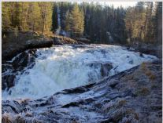

Водопад Куми
Водопад Куми, полное название которого звучит как Кумиокоски (Kuomiokoski), расположен на реке Войница в северной части Карелии. Мощный, широкий и величественный водопад поражает первозданной красотой..
Куми-порог получил известность не так давно: до 90-х годов он являлся частью приграничной территории, поэтому его посещение с туристической целью было запрещено. Граница с Финляндией пролегает в нескольких километрах от водопада.
На сегодняшний день проезд к водопаду открыт, однако он по-прежнему остается труднодоступным для большинства путешественников. Дело в том, что Кумиокоски расположен вдали от туристических маршрутов, плюс железнодорожного или автобусного сообщения с ближайшим поселком Войница нет. Таким образом, посетить водопад можно только на автомобиле или в составе организованной экскурсии. Тем не менее, самые любопытные путешественники добираются сюда: великолепие водопада и дикие природные места однозначно этого стоят! Как переводится название водопада? На саамском Куми означает медведь, а на карельском – чудо. И то, и другое слово вполне точно описывает каскад: его шум напоминает рев медведя, а по живописности он является настоящим чудом природы. Водопад Куми считается одним из самых крупных водопадов Карелии. В высоту достигает около 14 метров: если сравнивать с известным водопадом Кивач, то последний имеет меньшую высоту (около 10,7 метров).
Поскольку водопад располагается далеко от населенных пунктов, природа здесь действительно первозданная. Могучие леса, скалистые берега, широкие бурлящие потоки воды, полная уединенность… Туристы встречаются редко – сказывается сложность маршрута. Поток воды очень бурный – извещает о своей близости уже за несколько километров. Водопад имеет два уровня: широкий верхний превращается в более узкий, спускаясь по скальной расщелине. Впечатляющий вид открывается со смотровой площадки: Куми-порог, окутанный лесами, хорошо виден. Особенно величествен Кумоиокоски в весеннее время, когда каскад максимально наполняется водой во время дождей и таяния снега. В зимний период каскад частично по краям оказывается подо льдом, а от ниспадающих потоков исходит пар.